Integratin_test
Sophie
2026-09-18
Last updated: 2026-10-27
Checks: 7 0
Knit directory: Integration/
This reproducible R Markdown analysis was created with workflowr (version 1.7.2). The Checks tab describes the reproducibility checks that were applied when the results were created. The Past versions tab lists the development history.
Great! Since the R Markdown file has been committed to the Git repository, you know the exact version of the code that produced these results.
Great job! The global environment was empty. Objects defined in the global environment can affect the analysis in your R Markdown file in unknown ways. For reproduciblity it’s best to always run the code in an empty environment.
The command set.seed(20260910) was run prior to running
the code in the R Markdown file. Setting a seed ensures that any results
that rely on randomness, e.g. subsampling or permutations, are
reproducible.
Great job! Recording the operating system, R version, and package versions is critical for reproducibility.
Nice! There were no cached chunks for this analysis, so you can be confident that you successfully produced the results during this run.
Great job! Using relative paths to the files within your workflowr project makes it easier to run your code on other machines.
Great! You are using Git for version control. Tracking code development and connecting the code version to the results is critical for reproducibility.
The results in this page were generated with repository version 2187484. See the Past versions tab to see a history of the changes made to the R Markdown and HTML files.
Note that you need to be careful to ensure that all relevant files for
the analysis have been committed to Git prior to generating the results
(you can use wflow_publish or
wflow_git_commit). workflowr only checks the R Markdown
file, but you know if there are other scripts or data files that it
depends on. Below is the status of the Git repository when the results
were generated:
Ignored files:
Ignored: .Rhistory
Ignored: .Rproj.user/
Untracked files:
Untracked: analysis/Integration3.Rmd
Untracked: analysis/core
Note that any generated files, e.g. HTML, png, CSS, etc., are not included in this status report because it is ok for generated content to have uncommitted changes.
These are the previous versions of the repository in which changes were
made to the R Markdown (analysis/Integratin_test.Rmd) and
HTML (docs/Integratin_test.html) files. If you’ve
configured a remote Git repository (see ?wflow_git_remote),
click on the hyperlinks in the table below to view the files as they
were in that past version.
| File | Version | Author | Date | Message |
|---|---|---|---|---|
| Rmd | 2187484 | Sophie | 2026-10-27 | wflow_publish(c("analysis/Integratin_test.Rmd", "analysis/index.Rmd")) |
Setup
rm(list=ls())
gc() used (Mb) gc trigger (Mb) max used (Mb)
Ncells 902931 48.3 1744280 93.2 1315497 70.3
Vcells 1583847 12.1 8388608 64.0 2432062 18.6library(readr)
library(dplyr)
library(ggplot2)
library(Seurat)
library(hdf5r)
library(scCustomize)
library(patchwork)
library(cowplot)
library(ggrepel)
library(workflowr)
library(scDblFinder)
library(clustree)
library(harmony)
library(speckle)
library(MAST)
library(tibble)
library(EnhancedVolcano)
library(ggarchery)
library(ggtangle)
library(clusterProfiler)
library(org.Hs.eg.db)
library(GO.db)
library(DOSE)
library(fgsea)
library(forcats)
library(SCpubr)
library(assertthat)
library(UCell)
library(DT)
library(ggforce)
library(enrichplot)
library(ggrain)
library(ComplexHeatmap)
library(tidyverse)
library(circlize)
library(ggpubr)getting the merge to run on a small sample set
outputdir <- "/shares/rheumatologie.usz/Sophie/Gabi_Projects/Data_Sets_Heart/"
path <- "/shares/rheumatologie.usz/Sophie/Gabi_Projects/Data_Sets_Heart/MT_data_small.rds"
MT_data <- read_rds(path)
path <- "/shares/rheumatologie.usz/Sophie/Gabi_Projects/Data_Sets_Heart/Chaffin_data_small.rds"
Chaffin_data <- read_rds(path)
path <- "/shares/rheumatologie.usz/Sophie/Gabi_Projects/Data_Sets_Heart/DCM_data_small.rds"
DCM_data <- read_rds(path)
path <- "/shares/rheumatologie.usz/Sophie/Gabi_Projects/Data_Sets_Heart/Litvinukova_data_small.rds"
Litvinukova_data <- read_rds(path)
path <- "/shares/rheumatologie.usz/Sophie/Gabi_Projects/Data_Sets_Heart/Reichart_data_small.rds"
Reichart_data <- read_rds(path)
length(table(MT_data$sample))[1] 1length(table(Chaffin_data$sample))[1] 80length(table(DCM_data$sample))[1] 38length(table(Litvinukova_data$sample))[1] 147table(Litvinukova_data$condition)
HC
12119 length(table(Reichart_data$sample))[1] 196table(Reichart_data$condition)
ACM DCM HC LVCM
10682 45010 9472 766 subsetting max 5 samples per dataset to test
set.seed(42)
#Pick up to n samples per object. method = "largest" stress-tests with your
#biggest samples first (catches hangs/OOM fastest); "random" gives a more
#§representative but less adversarial test.
subset_max_samples <- function(obj, n = 2, method = c("largest", "random")) {
method <- match.arg(method)
stopifnot("sample" %in% colnames(obj@meta.data))
tab <- table(obj$sample)
tab <- tab[tab > 0]
chosen <- if (method == "largest") {
names(sort(tab, decreasing = TRUE))[seq_len(min(n, length(tab)))]
} else {
sample(names(tab), min(n, length(tab)))
}
message(sprintf("%-12s: %d -> %d samples | %d -> %d cells",
unique(obj$Dataset), length(tab), length(chosen),
ncol(obj), sum(tab[chosen])))
cells_keep <- colnames(obj)[obj$sample %in% chosen]
subset(obj, cells = cells_keep)
}
# apply to each loaded object
MT_data <- subset_max_samples(MT_data, n = 5, method = "random")MT_Data : 1 -> 1 samples | 1126 -> 1126 cellsChaffin_data <- subset_max_samples(Chaffin_data, n = 5, method = "random")Chaffin : 80 -> 5 samples | 60456 -> 2967 cellsDCM_data <- subset_max_samples(DCM_data, n = 5, method = "random")DCM : 38 -> 5 samples | 31397 -> 4902 cellsLitvinukova_data <- subset_max_samples(Litvinukova_data, n = 5, method = "random")Litvinukova : 91 -> 5 samples | 12119 -> 677 cellsReichart_data <- subset_max_samples(Reichart_data, n = 5, method = "random")Reichart : 196 -> 5 samples | 65930 -> 1457 cellsnow intersect the common genes
common_genes_mac <- Reduce(
intersect,
list(
rownames(MT_data),
rownames(Reichart_data),
rownames(Chaffin_data),
rownames(Litvinukova_data),
rownames(DCM_data)
)
)
######## merge the object
macrophage_merged <- merge(
x = MT_data,
y = list(Reichart_data, Chaffin_data, Litvinukova_data, DCM_data),
add.cell.ids = c("MT", "Reichart", "Chaffin", "Litvinukova", "DCM"),
project = "Merged_Macrophage_Atlas"
)
# 4. Subset merged object to common gene set
macrophage_merged <- macrophage_merged[common_genes_mac, ]
macrophage_mergedAn object of class Seurat
19845 features across 11129 samples within 1 assay
Active assay: RNA (19845 features, 0 variable features)
9 layers present: counts.1, counts.2, counts.3, counts.4, counts.5, data.1, data.3, data.4, data.5table(macrophage_merged$sample)
BO_H19_LV0_premrna BO_H29_S00_premrna BO_H80_RV0_premrna BS_H35_S00_premrna
297 259 527 111
ED_DS3_LV0_premrna H_ZC-11-292 H0015_LA_new H0037_RA_corr
263 1148 229 151
HCAHeart7664653 HCAHeart7836684 HCAHeart8287124 LV_1290_1_dcm
206 73 18 565
LV_1516_1_nf LV_1540_2_nf LV_1549_2_nf LV_1685_2_hcm
776 319 751 556
MT_derived TWCM-10-68 TWCM-11-78 TWCM-13-168
1126 458 1748 1018
TWCM-13-84
530 # Clean up raw workspace objects to free memory
#rm(MT_data, Reichart_data, Chaffin_data, Litvinukova_data, DCM_data)
#gc()
# QC Visualization
VlnPlot(
macrophage_merged,
features = c("nFeature_RNA", "nCount_RNA", "percent.mt"),
group.by = "Dataset",
pt.size = 0,
raster = FALSE
)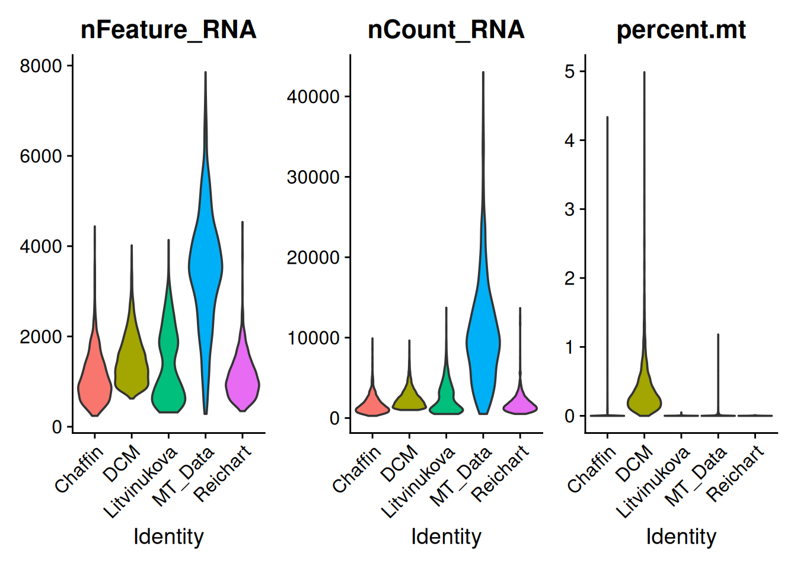
table(macrophage_merged$condition)
ACM DCM HC HCM no_TGF with_TGF
259 2182 7006 556 662 464 # --------------------------------------------------------------
# 1. Split, filter tiny samples, run SCTransform per sample
# --------------------------------------------------------------
DefaultAssay(macrophage_merged) <- "RNA"
# collapse any pre-existing multi-layer counts into one, BEFORE splitting by sample
if (length(grep("^counts", Layers(macrophage_merged[["RNA"]]))) > 1) {
macrophage_merged[["RNA"]] <- JoinLayers(macrophage_merged[["RNA"]])
message("Joined RNA layers -> ", paste(Layers(macrophage_merged[["RNA"]]), collapse = ", "))
}Joined RNA layers -> data, countstable(macrophage_merged$sample)
BO_H19_LV0_premrna BO_H29_S00_premrna BO_H80_RV0_premrna BS_H35_S00_premrna
297 259 527 111
ED_DS3_LV0_premrna H_ZC-11-292 H0015_LA_new H0037_RA_corr
263 1148 229 151
HCAHeart7664653 HCAHeart7836684 HCAHeart8287124 LV_1290_1_dcm
206 73 18 565
LV_1516_1_nf LV_1540_2_nf LV_1549_2_nf LV_1685_2_hcm
776 319 751 556
MT_derived TWCM-10-68 TWCM-11-78 TWCM-13-168
1126 458 1748 1018
TWCM-13-84
530 sample_list <- SplitObject(macrophage_merged, split.by = "sample")
sample_sizes <- sapply(sample_list, ncol)
valid_samples <- names(sample_sizes[sample_sizes >= 100])
message(length(sample_list) - length(valid_samples),
" tiny samples (<100 cells) excluded to prevent regression errors.")2 tiny samples (<100 cells) excluded to prevent regression errors.sample_list <- sample_list[valid_samples]
sct_list <- list()
for (s in names(sample_list)) {
if ("SCT" %in% names(sample_list[[s]]@assays)) {
sample_list[[s]][["SCT"]] <- NULL
}
sct_list[[s]] <- tryCatch({
SCTransform(
sample_list[[s]],
vst.flavor = "v2",
vars.to.regress = "percent.mt",
return.only.var.genes = TRUE,
variable.features.n = 2000,
min_cells = 5,
verbose = FALSE
)
}, error = function(e) {
warning("SCTransform failed for sample ", s, ": ", e$message)
return(NULL)
})
}
# report + drop failures explicitly, don't lose track of what vanished
failed <- names(sct_list)[sapply(sct_list, is.null)]
if (length(failed) > 0) {
message(length(failed), " samples failed SCTransform: ",
paste(failed, collapse = ", "))
}
sct_list <- sct_list[!sapply(sct_list, is.null)]
stopifnot(length(sct_list) > 0)
############################## new code
# ==============================================================
# NEW SECTION 2 & 3: PrepSCTIntegration + Low-RAM Merge
# (REPLACES YOUR OLD SECTIONS 2 AND 3 ENTIRELY)
# ==============================================================
# Step A: Find the consensus 2,000 variable features across all samples
features <- SelectIntegrationFeatures(object.list = sct_list, nfeatures = 2000)
# Step B: Calculate scale.data inside EACH individual sample before merging
# (Extremely fast & low RAM because each sample is only ~450 cells)
message("Prepping SCT residuals per sample across ", length(sct_list), " samples...")Prepping SCT residuals per sample across 19 samples...sct_list <- PrepSCTIntegration(
object.list = sct_list,
anchor.features = features,
verbose = FALSE
)
# Step C: Merge the objects
# merge.data = TRUE safely concatenates the small 2,000-gene scale.data matrices
message("Merging samples...")Merging samples...macrophage_merged <- merge(
x = sct_list[[1]],
y = sct_list[-1],
merge.data = TRUE
)
# Step D: Assign Default Assay and Variable Features
DefaultAssay(macrophage_merged) <- "SCT"
VariableFeatures(macrophage_merged) <- features
# Step E: Join RNA counts layers if needed for downstream operations
DefaultAssay(macrophage_merged) <- "RNA"
rna_layers <- grep("^counts", Layers(macrophage_merged[["RNA"]]), value = TRUE)
if (length(rna_layers) > 1) {
macrophage_merged[["RNA"]] <- JoinLayers(macrophage_merged[["RNA"]])
}
# Switch back to SCT for PCA / Harmony
DefaultAssay(macrophage_merged) <- "SCT"
# Verification
sd_dim <- dim(GetAssayData(macrophage_merged, assay = "SCT", layer = "scale.data"))
message("Final scale.data dimensions: ", sd_dim[1], " x ", sd_dim[2])Final scale.data dimensions: 2000 x 11038stopifnot(all(sd_dim > 0))
macrophage_mergedAn object of class Seurat
34186 features across 11038 samples within 2 assays
Active assay: SCT (14341 features, 2000 variable features)
3 layers present: counts, data, scale.data
1 other assay present: RNAPCA
macrophage_merged <- RunPCA(macrophage_merged, npcs = 50, verbose = FALSE)
ElbowPlot(macrophage_merged, ndims = 50)
Harmony - too much
#macrophage_merged@meta.data
# macrophage_merged <- harmony::RunHarmony(
# object = macrophage_merged,
# assay.use = "SCT",
# group.by.vars = c("sample", "Dataset"),
# dims.use = 1:50,
# plot_convergence = TRUE,
# .options = harmony::harmony_options(max.iter.cluster = 100)
# )Clustering
DefaultAssay(macrophage_merged) <- "SCT"
# macrophage_merged <- RunUMAP(
# macrophage_merged,
# reduction = "pca",
# dims = 1:15
# )
macrophage_merged <- RunUMAP(
macrophage_merged,
reduction = "pca",
dims = 1:15,
min.dist = 0.05, # Default is 0.3; lowering it separates dense continuous populations
spread = 1.2,
n.neighbors = 50 # Preserves global structure better across large cell counts
)Warning: The default method for RunUMAP has changed from calling Python UMAP via reticulate to the R-native UWOT using the cosine metric
To use Python UMAP via reticulate, set umap.method to 'umap-learn' and metric to 'correlation'
This message will be shown once per session13:02:08 UMAP embedding parameters a = 1.314 b = 0.833313:02:08 Read 11038 rows and found 15 numeric columns13:02:08 Using Annoy for neighbor search, n_neighbors = 5013:02:08 Building Annoy index with metric = cosine, n_trees = 500% 10 20 30 40 50 60 70 80 90 100%[----|----|----|----|----|----|----|----|----|----|**************************************************|
13:02:09 Writing NN index file to temp file /tmp/RtmpXh0cPr/file31ef62413eac82
13:02:09 Searching Annoy index using 1 thread, search_k = 5000
13:02:14 Annoy recall = 100%
13:02:16 Commencing smooth kNN distance calibration using 1 thread with target n_neighbors = 50
13:02:18 Initializing from normalized Laplacian + noise (using RSpectra)
13:02:18 Commencing optimization for 200 epochs, with 761434 positive edges
13:02:18 Using rng type: pcg
13:02:23 Optimization finishedDimPlot(macrophage_merged, reduction = "umap", group.by = "Dataset")
macrophage_merged <- FindNeighbors(
macrophage_merged,
reduction = "pca",
dims = 1:15
)Computing nearest neighbor graph
Computing SNNmacrophage_merged <- FindClusters(
macrophage_merged,
resolution = seq(0.1, 0.5, by = 0.1)
)Modularity Optimizer version 1.3.0 by Ludo Waltman and Nees Jan van Eck
Number of nodes: 11038
Number of edges: 323006
Running Louvain algorithm...
Maximum modularity in 10 random starts: 0.9315
Number of communities: 4
Elapsed time: 1 seconds
Modularity Optimizer version 1.3.0 by Ludo Waltman and Nees Jan van Eck
Number of nodes: 11038
Number of edges: 323006
Running Louvain algorithm...
Maximum modularity in 10 random starts: 0.8827
Number of communities: 6
Elapsed time: 1 seconds
Modularity Optimizer version 1.3.0 by Ludo Waltman and Nees Jan van Eck
Number of nodes: 11038
Number of edges: 323006
Running Louvain algorithm...
Maximum modularity in 10 random starts: 0.8555
Number of communities: 7
Elapsed time: 1 seconds
Modularity Optimizer version 1.3.0 by Ludo Waltman and Nees Jan van Eck
Number of nodes: 11038
Number of edges: 323006
Running Louvain algorithm...
Maximum modularity in 10 random starts: 0.8280
Number of communities: 7
Elapsed time: 1 seconds
Modularity Optimizer version 1.3.0 by Ludo Waltman and Nees Jan van Eck
Number of nodes: 11038
Number of edges: 323006
Running Louvain algorithm...
Maximum modularity in 10 random starts: 0.8042
Number of communities: 8
Elapsed time: 1 secondsIdents(macrophage_merged) <- "SCT_snn_res.0.2"
DimPlot(macrophage_merged, reduction = "umap")
table(macrophage_merged$cell_statesL2, macrophage_merged$SCT_snn_res.0.2)
0 1 2 3 4 5
Macrophage_Inflammatory_Chemokine 92 96 4 0 0 60
Macrophage_ISG 22 12 0 0 0 0
Macrophage_MHCII_AgP 71 121 3 0 0 0
Macrophage_Resident_LYVE1 1986 483 57 2 4 0
Macrophage_TREM2_Phagocytic 65 714 75 2 0 1
Monocyte_Classical_CD14_VCAN 2 114 2 0 0 1
Monocyte_Inflammatory_Intermediate 3 9 0 1 0 2
Monocyte_NonClassical_CD16 24 86 1 0 0 16
MT_Macrophages 84 66 951 7 18 0
Myeloid_Cycling 32 47 2 0 95 0
Other_Immune_NonMyeloid 133 238 6 248 77 1
unknown 2417 1845 122 295 128 95clustree::clustree(macrophage_merged@meta.data[,grep("SCT_snn_res", colnames(macrophage_merged@meta.data))], prefix = "SCT_snn_res.")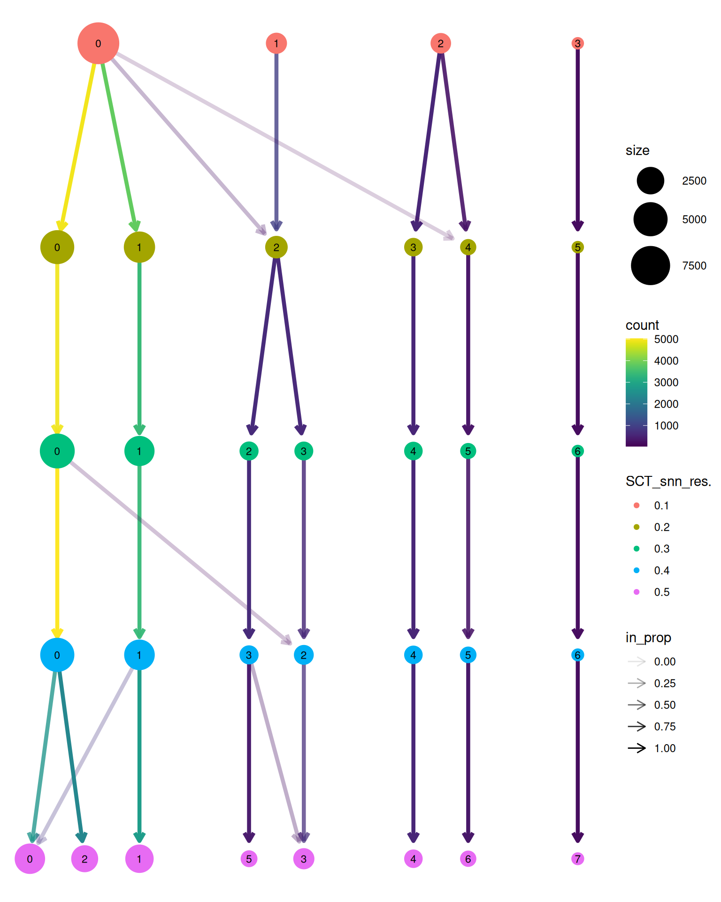
UMAPs combined
Deciding on SCT_snn 0.3
Idents(macrophage_merged) <- "SCT_snn_res.0.3"
p1 <- DimPlot(
macrophage_merged,
reduction = "umap",
group.by = "SCT_snn_res.0.3",
label = TRUE,
repel = TRUE,
shuffle = TRUE,
raster = FALSE,
pt.size = 0.1
) +
NoLegend() +
ggtitle("Combined Macrophages subclusters") +
theme(
axis.text = element_text(size = 8, face = "bold"),
axis.title = element_text(size = 12, face = "bold"),
plot.title = element_text(size = 14, face = "bold", hjust = 0.5)
)
p2 <- DimPlot(
macrophage_merged,
reduction = "umap",
group.by = "Dataset",
shuffle = TRUE,
raster = FALSE,
pt.size = 0.1
) +
ggtitle("Dataset") +
theme(
axis.text = element_text(size = 8, face = "bold"),
axis.title = element_text(size = 12, face = "bold"),
plot.title = element_text(size = 14, face = "bold", hjust = 0.5)
)
p <- DimPlot(
macrophage_merged,
reduction = "umap",
group.by = "cell_statesL2",
shuffle = TRUE,
raster = FALSE,
pt.size = 0.1
) +
ggtitle("cell_statesL1") +
theme(
axis.text = element_text(size = 8, face = "bold"),
axis.title = element_text(size = 12, face = "bold"),
plot.title = element_text(size = 14, face = "bold", hjust = 0.5)
)
p3 <- DimPlot(
macrophage_merged,
reduction = "umap",
split.by = "Dataset",
group.by = "SCT_snn_res.0.3",
label = FALSE,
shuffle = TRUE,
pt.size = 0.1,
raster = FALSE,
ncol = 3
) +
NoLegend() +
theme(
axis.text = element_text(size = 8, face = "bold"),
axis.title = element_text(size = 12, face = "bold"),
strip.text = element_text(size = 12, face = "bold")
)
p4 <- DimPlot(
macrophage_merged,
reduction = "umap",
split.by = "condition",
group.by = "SCT_snn_res.0.3",
label = FALSE,
shuffle = TRUE,
pt.size = 0.1,
raster = FALSE,
ncol = 3
) +
NoLegend() +
theme(
axis.text = element_text(size = 8, face = "bold"),
axis.title = element_text(size = 12, face = "bold"),
strip.text = element_text(size = 12, face = "bold")
)
(p1 | p2) / (p3 | p)
DimPlot(
macrophage_merged,
reduction = "umap",
group.by = "condition",
label = FALSE,
shuffle = TRUE,
pt.size = 0.1,
raster = FALSE)
table(macrophage_merged$method)
sn
11038 save Rds
# Save obj
outputdir <- "/shares/rheumatologie.usz/Sophie/Gabi_Projects/Data_Sets_Heart/"
#saveRDS(macrophage_merged, file = file.path(outputdir, "Mac_Integrated3_MT_Derived_sample.rds"))another test to combat over integration:
# ==============================================================================
# 1. MERGE RAW RNA ASSAYS (Keep full gene set for SCT modeling)
# ==============================================================================
DefaultAssay(MT_data) <- "RNA"
macrophage_merged <- merge(
x = MT_data,
y = list(Reichart_data, Chaffin_data, Litvinukova_data, DCM_data),
add.cell.ids = c("MT", "Reichart", "Chaffin", "Litvinukova", "DCM"),
project = "Merged_Macrophage_Atlas"
)
# Clean workspace memory
#rm(MT_data, Reichart_data, Chaffin_data, Litvinukova_data, DCM_data)
#gc()
macrophage_merged <- macrophage_merged[common_genes_mac, ]
macrophage_mergedAn object of class Seurat
19845 features across 11129 samples within 1 assay
Active assay: RNA (19845 features, 0 variable features)
9 layers present: counts.1, counts.2, counts.3, counts.4, counts.5, data.1, data.3, data.4, data.5table(macrophage_merged$sample)
BO_H19_LV0_premrna BO_H29_S00_premrna BO_H80_RV0_premrna BS_H35_S00_premrna
297 259 527 111
ED_DS3_LV0_premrna H_ZC-11-292 H0015_LA_new H0037_RA_corr
263 1148 229 151
HCAHeart7664653 HCAHeart7836684 HCAHeart8287124 LV_1290_1_dcm
206 73 18 565
LV_1516_1_nf LV_1540_2_nf LV_1549_2_nf LV_1685_2_hcm
776 319 751 556
MT_derived TWCM-10-68 TWCM-11-78 TWCM-13-168
1126 458 1748 1018
TWCM-13-84
530 # Join RNA layers if split
if (length(grep("^counts", Layers(macrophage_merged[["RNA"]]))) > 1) {
macrophage_merged[["RNA"]] <- JoinLayers(macrophage_merged[["RNA"]])
}
# ==============================================================================
# 2. RUN GLOBAL SCTRANSFORM (Preserves cross-dataset variance)
# ==============================================================================
macrophage_merged <- SCTransform(
macrophage_merged,
vst.flavor = "v2",
vars.to.regress = "percent.mt",
return.only.var.genes = FALSE,
verbose = FALSE
)
# ==============================================================================
# 3. PCA & CONTROLLED HARMONY INTEGRATION
# ==============================================================================
pcs <- 20
DefaultAssay(macrophage_merged) <- "SCT"
macrophage_merged <- RunPCA(macrophage_merged, npcs = 30, verbose = FALSE)
macrophage_merged <- RunUMAP(macrophage_merged, reduction = "pca", dims = 1:pcs)13:04:06 UMAP embedding parameters a = 0.9922 b = 1.11213:04:06 Read 11129 rows and found 20 numeric columns13:04:06 Using Annoy for neighbor search, n_neighbors = 3013:04:06 Building Annoy index with metric = cosine, n_trees = 500% 10 20 30 40 50 60 70 80 90 100%[----|----|----|----|----|----|----|----|----|----|**************************************************|
13:04:07 Writing NN index file to temp file /tmp/RtmpXh0cPr/file31ef6223680983
13:04:07 Searching Annoy index using 1 thread, search_k = 3000
13:04:10 Annoy recall = 100%
13:04:11 Commencing smooth kNN distance calibration using 1 thread with target n_neighbors = 30
13:04:14 Initializing from normalized Laplacian + noise (using RSpectra)
13:04:14 Commencing optimization for 200 epochs, with 462920 positive edges
13:04:14 Using rng type: pcg
13:04:18 Optimization finishedDimPlot(macrophage_merged, reduction = "umap", group.by = c("Dataset", "condition"))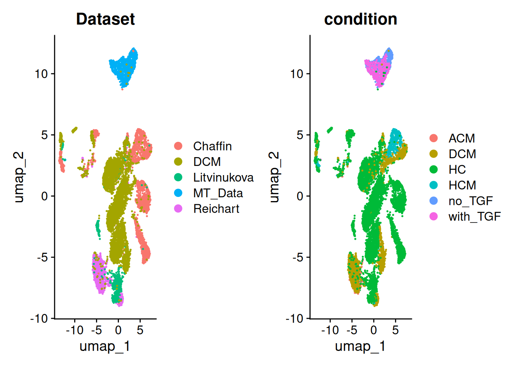
# Group ONLY by Dataset to avoid stripping patient/disease variation
# Using 20 PCs and setting theta = 1 prevents over-clustering
macrophage_merged_harmony <- harmony::RunHarmony(
object = macrophage_merged,
assay.use = "SCT",
group.by.vars = c("Dataset"),
dims.use = 1:pcs, # Gentler integration penalty (default is 2)
plot_convergence = FALSE
)Transposing data matrix
Initializing state using k-means centroids initialization
Harmony 1/10
Harmony 2/10
Harmony 3/10
Harmony 4/10
Harmony 5/10
Harmony converged after 5 iterations# ==============================================================================
# 4. UMAP & CLUSTERING (Using matching 1:20 Harmony dimensions)
# ==============================================================================
macrophage_merged_harmony <- RunUMAP(
macrophage_merged_harmony,
reduction = "harmony",
dims = 1:pcs
)13:04:22 UMAP embedding parameters a = 0.9922 b = 1.112
13:04:22 Read 11129 rows and found 20 numeric columns
13:04:22 Using Annoy for neighbor search, n_neighbors = 30
13:04:22 Building Annoy index with metric = cosine, n_trees = 50
0% 10 20 30 40 50 60 70 80 90 100%
[----|----|----|----|----|----|----|----|----|----|
**************************************************|
13:04:23 Writing NN index file to temp file /tmp/RtmpXh0cPr/file31ef62172e73a3
13:04:23 Searching Annoy index using 1 thread, search_k = 3000
13:04:26 Annoy recall = 100%
13:04:28 Commencing smooth kNN distance calibration using 1 thread with target n_neighbors = 30
13:04:30 Initializing from normalized Laplacian + noise (using RSpectra)
13:04:30 Commencing optimization for 200 epochs, with 470184 positive edges
13:04:30 Using rng type: pcg
13:04:35 Optimization finishedmacrophage_merged_harmony <- FindNeighbors(
macrophage_merged_harmony,
reduction = "harmony",
dims = 1:pcs
)Computing nearest neighbor graph
Computing SNNmacrophage_merged_harmony <- FindClusters(
macrophage_merged_harmony,
resolution = 0.2
)Modularity Optimizer version 1.3.0 by Ludo Waltman and Nees Jan van Eck
Number of nodes: 11129
Number of edges: 416180
Running Louvain algorithm...
Maximum modularity in 10 random starts: 0.9237
Number of communities: 10
Elapsed time: 1 secondsDimPlot(macrophage_merged_harmony, reduction = "umap", group.by = c("Dataset", "condition"))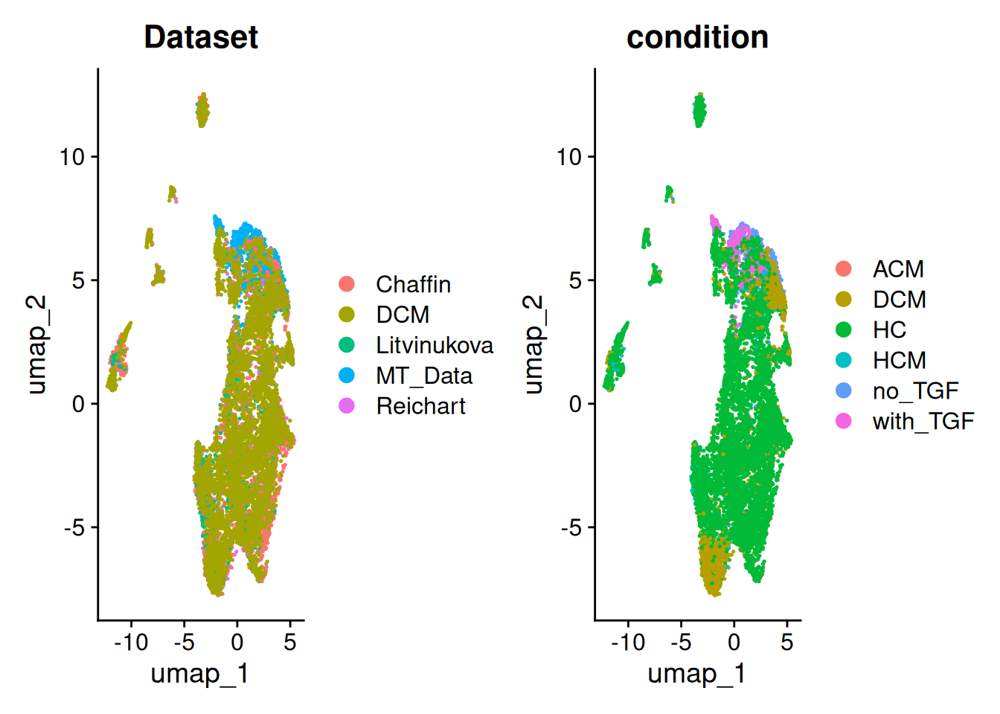
DimPlot(macrophage_merged_harmony, reduction = "umap", group.by = c("region", "cell_statesL2"))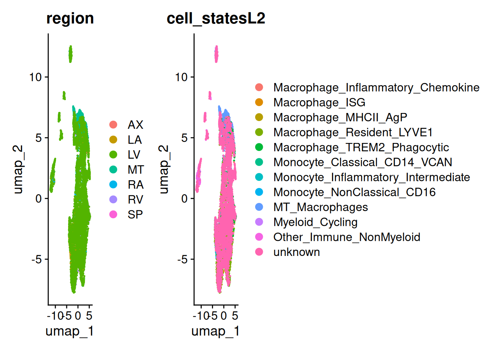
Map the atlas then add MT
using log tranform
common_genes_mac <- Reduce(
intersect,
list(
rownames(MT_data),
rownames(Reichart_data),
rownames(Chaffin_data),
rownames(Litvinukova_data),
rownames(DCM_data)
)
)
# ==============================================================================
# 1. MERGE RAW RNA ASSAYS (Keep full gene set for SCT modeling)
# ==============================================================================
DefaultAssay(Reichart_data) <- "RNA"
macrophage_merged_background <- merge(
x = Reichart_data,
y = list(Chaffin_data, Litvinukova_data, DCM_data),
add.cell.ids = c("Reichart", "Chaffin", "Litvinukova", "DCM"),
project = "Merged_Macrophage_Atlas"
)
# Clean workspace memory
#rm(MT_data, Reichart_data, Chaffin_data, Litvinukova_data, DCM_data)
#gc()
macrophage_merged_background <- macrophage_merged_background[common_genes_mac, ]
macrophage_merged_backgroundAn object of class Seurat
19845 features across 10003 samples within 1 assay
Active assay: RNA (19845 features, 0 variable features)
7 layers present: counts.1, counts.2, counts.3, counts.4, data.2, data.3, data.4table(macrophage_merged_background$sample)
BO_H19_LV0_premrna BO_H29_S00_premrna BO_H80_RV0_premrna BS_H35_S00_premrna
297 259 527 111
ED_DS3_LV0_premrna H_ZC-11-292 H0015_LA_new H0037_RA_corr
263 1148 229 151
HCAHeart7664653 HCAHeart7836684 HCAHeart8287124 LV_1290_1_dcm
206 73 18 565
LV_1516_1_nf LV_1540_2_nf LV_1549_2_nf LV_1685_2_hcm
776 319 751 556
TWCM-10-68 TWCM-11-78 TWCM-13-168 TWCM-13-84
458 1748 1018 530 # Join RNA layers if split
if (length(grep("^counts", Layers(macrophage_merged_background[["RNA"]]))) > 1) {
macrophage_merged_background[["RNA"]] <- JoinLayers(macrophage_merged_background[["RNA"]])
}
# ==============================================================================
# 2. RUN GLOBAL SCTRANSFORM (Preserves cross-dataset variance)
# ==============================================================================
# macrophage_merged_background <- SCTransform(
# macrophage_merged_background,
# vst.flavor = "v2",
# vars.to.regress = "percent.mt",
# return.only.var.genes = FALSE,
# verbose = FALSE
# )
macrophage_merged_background <- NormalizeData(macrophage_merged_background, normalization.method = "LogNormalize", scale.factor = 10000)Normalizing layer: countsWarning: Different cells in new layer data than already exists for datamacrophage_merged_background <- FindVariableFeatures(macrophage_merged_background, selection.method = "vst", nfeatures = 2000)Finding variable features for layer countsmacrophage_merged_background <- ScaleData(macrophage_merged_background, features = VariableFeatures(macrophage_merged_background), vars.to.regress = "percent.mt")Regressing out percent.mtCentering and scaling data matrix# ==============================================================================
# 3. PCA & CONTROLLED HARMONY INTEGRATION
# ==============================================================================
pcs <- 20
DefaultAssay(macrophage_merged_background) <- "RNA"
macrophage_merged_background <- RunPCA(macrophage_merged_background, npcs = 30, verbose = FALSE)
macrophage_merged_background <- RunUMAP(macrophage_merged_background, reduction = "pca", dims = 1:pcs)13:05:05 UMAP embedding parameters a = 0.9922 b = 1.11213:05:05 Read 10003 rows and found 20 numeric columns13:05:05 Using Annoy for neighbor search, n_neighbors = 3013:05:05 Building Annoy index with metric = cosine, n_trees = 500% 10 20 30 40 50 60 70 80 90 100%[----|----|----|----|----|----|----|----|----|----|**************************************************|
13:05:06 Writing NN index file to temp file /tmp/RtmpXh0cPr/file31ef6245cab008
13:05:06 Searching Annoy index using 1 thread, search_k = 3000
13:05:09 Annoy recall = 100%
13:05:10 Commencing smooth kNN distance calibration using 1 thread with target n_neighbors = 30
13:05:13 Initializing from normalized Laplacian + noise (using RSpectra)
13:05:13 Commencing optimization for 200 epochs, with 414522 positive edges
13:05:13 Using rng type: pcg
13:05:17 Optimization finishedDimPlot(macrophage_merged_background, reduction = "umap", group.by = c("Dataset", "condition"))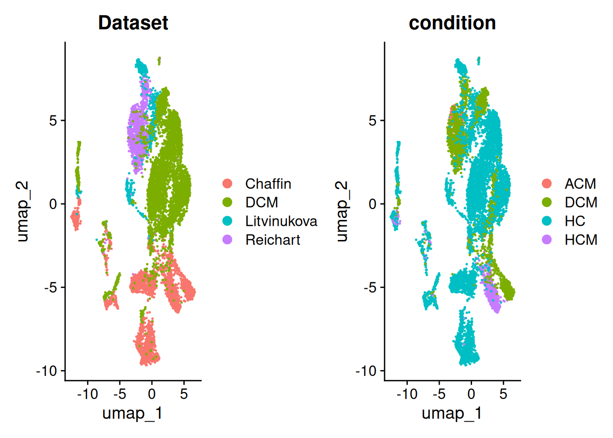
# Group ONLY by Dataset to avoid stripping patient/disease variation
macrophage_merged_harmony <- harmony::RunHarmony(
object = macrophage_merged_background,
assay.use = "RNA",
group.by.vars = c("Dataset"),
dims.use = 1:pcs,
plot_convergence = FALSE
)Transposing data matrix
Initializing state using k-means centroids initialization
Harmony 1/10
Harmony 2/10
Harmony 3/10
Harmony 4/10
Harmony 5/10
Harmony 6/10
Harmony converged after 6 iterations# ==============================================================================
# 4. UMAP & CLUSTERING (Using matching 1:20 Harmony dimensions)
# ==============================================================================
macrophage_merged_harmony <- RunUMAP(
macrophage_merged_harmony,
reduction = "harmony",
return.model = TRUE,
dims = 1:pcs
)UMAP will return its model
13:05:21 UMAP embedding parameters a = 0.9922 b = 1.112
13:05:21 Read 10003 rows and found 20 numeric columns
13:05:21 Using Annoy for neighbor search, n_neighbors = 30
13:05:21 Building Annoy index with metric = cosine, n_trees = 50
0% 10 20 30 40 50 60 70 80 90 100%
[----|----|----|----|----|----|----|----|----|----|
**************************************************|
13:05:22 Writing NN index file to temp file /tmp/RtmpXh0cPr/file31ef623147c6c0
13:05:22 Searching Annoy index using 1 thread, search_k = 3000
13:05:24 Annoy recall = 100%
13:05:26 Commencing smooth kNN distance calibration using 1 thread with target n_neighbors = 30
13:05:27 Initializing from normalized Laplacian + noise (using RSpectra)
13:05:27 Commencing optimization for 200 epochs, with 427324 positive edges
13:05:27 Using rng type: pcg
13:05:31 Optimization finishedmacrophage_merged_harmony <- FindNeighbors(
macrophage_merged_harmony,
reduction = "harmony",
dims = 1:pcs
)Computing nearest neighbor graph
Computing SNNmacrophage_merged_harmony <- FindClusters(
macrophage_merged_harmony,
resolution = 0.1
)Modularity Optimizer version 1.3.0 by Ludo Waltman and Nees Jan van Eck
Number of nodes: 10003
Number of edges: 375054
Running Louvain algorithm...
Maximum modularity in 10 random starts: 0.9292
Number of communities: 6
Elapsed time: 0 secondsDimPlot(macrophage_merged_harmony, reduction = "umap", split.by = c("Dataset"))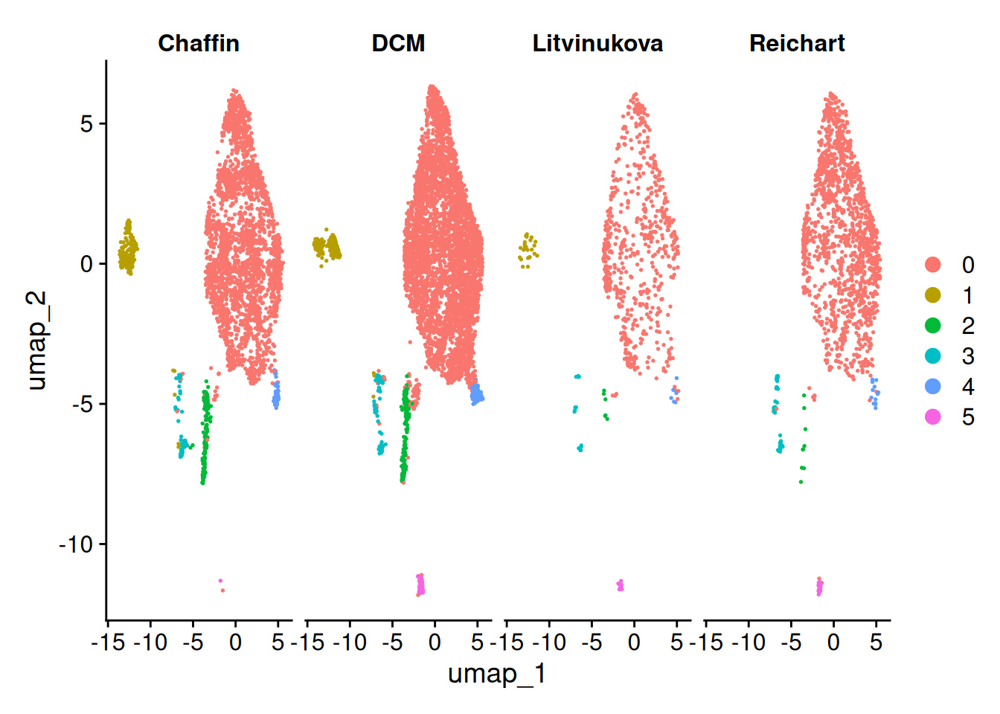
DimPlot(macrophage_merged_harmony, reduction = "umap", split.by = c("condition"))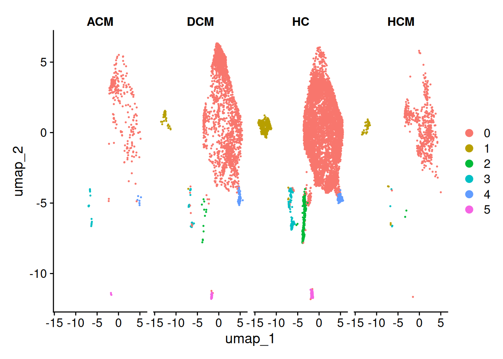
table(macrophage_merged_harmony$condition, macrophage_merged_harmony$Dataset)
Chaffin DCM Litvinukova Reichart
ACM 0 0 0 259
DCM 565 530 0 1087
HC 1846 4372 677 111
HCM 556 0 0 0DimPlot(macrophage_merged_harmony, reduction = "umap", group.by = c("region", "cell_statesL2"))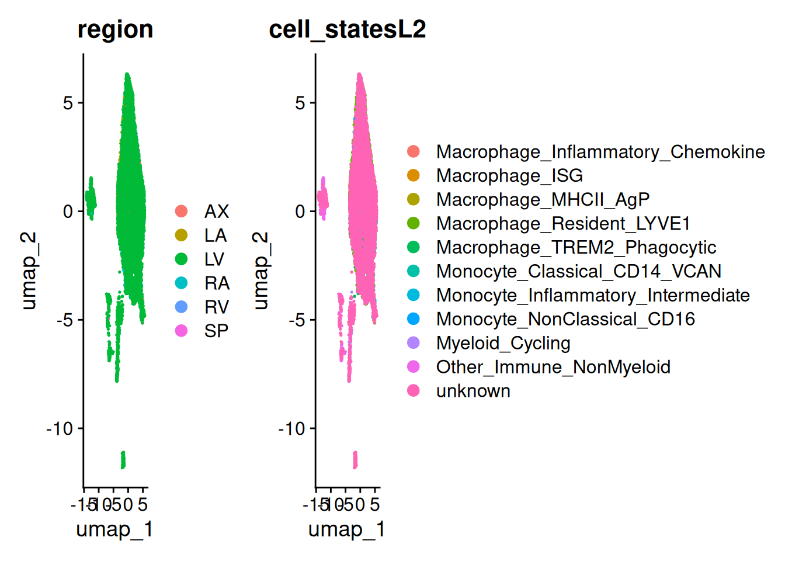
DimPlot(macrophage_merged_harmony, reduction = "umap", group.by = c("seurat_clusters", "RNA_snn_res.0.1"))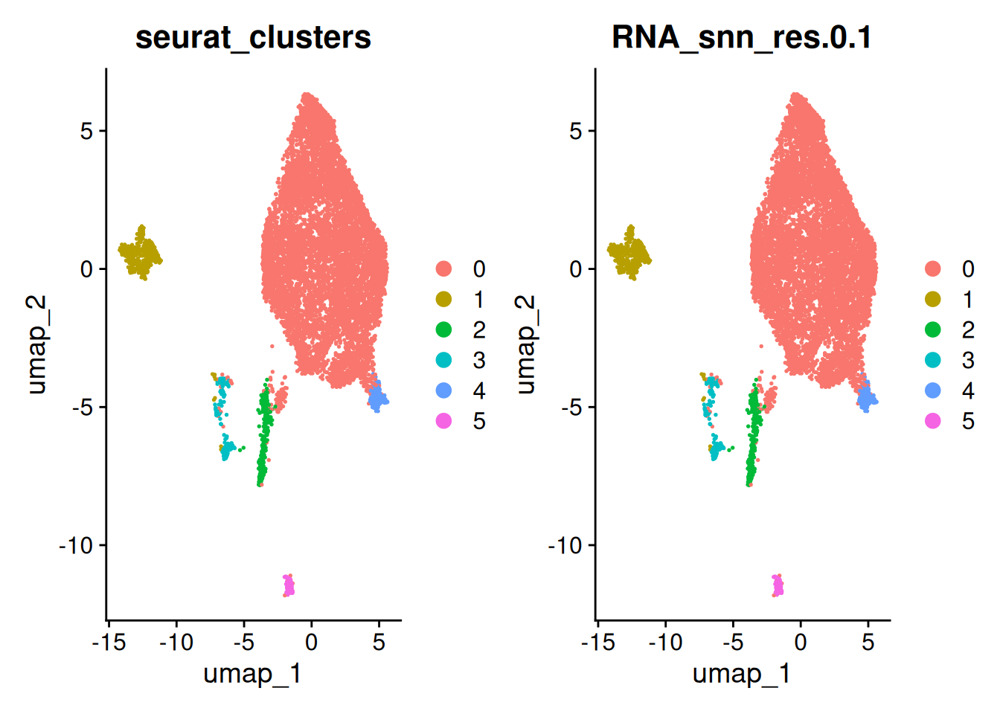
# Set default assay to RNA for marker testing
DefaultAssay(macrophage_merged_harmony) <- "RNA"
# Find markers across res.0.3 clusters
mac_markers <- FindAllMarkers(macrophage_merged_harmony, only.pos = TRUE)Calculating cluster 0
Calculating cluster 1
Calculating cluster 2
Calculating cluster 3
Calculating cluster 4
Calculating cluster 5mac_markers %>%
group_by(cluster) %>%
dplyr::filter(avg_log2FC > 1)# A tibble: 7,190 × 7
# Groups: cluster [6]
p_val avg_log2FC pct.1 pct.2 p_val_adj cluster gene
<dbl> <dbl> <dbl> <dbl> <dbl> <fct> <chr>
1 3.14e-197 1.59 0.818 0.389 6.23e-193 0 MRC1
2 5.96e-183 1.57 0.825 0.423 1.18e-178 0 F13A1
3 3.98e-178 1.43 0.83 0.432 7.90e-174 0 CD163
4 1.26e-160 1.51 0.757 0.391 2.50e-156 0 MS4A6A
5 4.54e-149 1.11 0.868 0.576 9.02e-145 0 FRMD4B
6 5.79e-139 1.17 0.825 0.5 1.15e-134 0 RBM47
7 1.04e-122 1.30 0.737 0.422 2.07e-118 0 MERTK
8 3.07e-115 1.10 0.804 0.543 6.09e-111 0 SLC9A9
9 2.79e-114 1.04 0.849 0.596 5.53e-110 0 LDLRAD4
10 2.53e-113 1.29 0.716 0.453 5.02e-109 0 NAIP
# ℹ 7,180 more rowsmac_markers %>%
group_by(cluster) %>%
dplyr::filter(avg_log2FC > 1) %>%
slice_head(n = 5) %>%
ungroup() -> top10
top10# A tibble: 30 × 7
p_val avg_log2FC pct.1 pct.2 p_val_adj cluster gene
<dbl> <dbl> <dbl> <dbl> <dbl> <fct> <chr>
1 3.14e-197 1.59 0.818 0.389 6.23e-193 0 MRC1
2 5.96e-183 1.57 0.825 0.423 1.18e-178 0 F13A1
3 3.98e-178 1.43 0.83 0.432 7.90e-174 0 CD163
4 1.26e-160 1.51 0.757 0.391 2.50e-156 0 MS4A6A
5 4.54e-149 1.11 0.868 0.576 9.02e-145 0 FRMD4B
6 0 8.35 0.966 0.015 0 1 SLC24A3
7 0 8.01 0.912 0.021 0 1 NTM
8 0 6.43 0.939 0.06 0 1 IL18R1
9 0 8.40 0.857 0.009 0 1 KIT
10 0 8.10 0.726 0.008 0 1 CPA3
# ℹ 20 more rows########## prep MT data log
path <- "/shares/rheumatologie.usz/Sophie/Gabi_Projects/Data_Sets_Heart/MT_data_small.rds"
MT_data <- read_rds(path)
MT_data_norm <- NormalizeData(MT_data, normalization.method = "LogNormalize", scale.factor = 10000)
MT_data_norm <- FindVariableFeatures(MT_data_norm, selection.method = "vst", nfeatures = 2000)
MT_data_norm <- ScaleData(MT_data_norm, features = VariableFeatures(MT_data_norm), vars.to.regress = "percent.mt")Regressing out percent.mtCentering and scaling data matrixDefaultAssay(MT_data_norm) <- "RNA"
################################## Clean the UMAP from before
macrophage_clean <- subset(macrophage_merged_harmony, idents = c(0, 1, 2, 5))
macrophage_clean <- FindVariableFeatures(macrophage_clean, selection.method = "vst", nfeatures = 2000)Finding variable features for layer countsmacrophage_clean <- ScaleData(macrophage_clean, features = VariableFeatures(macrophage_clean), vars.to.regress = "percent.mt")Regressing out percent.mt
Centering and scaling data matrixWarning: Different features in new layer data than already exists for
scale.datamacrophage_clean <- RunPCA(macrophage_clean, npcs = 30, verbose = FALSE)
macrophage_clean <- harmony::RunHarmony(
object = macrophage_clean,
assay.use = "RNA",
group.by.vars = "Dataset",
dims.use = 1:pcs,
plot_convergence = FALSE
)Transposing data matrixInitializing state using k-means centroids initializationHarmony 1/10Harmony 2/10Harmony 3/10Harmony 4/10Harmony 5/10Harmony 6/10Harmony converged after 6 iterationsmacrophage_clean <- RunUMAP(
macrophage_clean,
reduction = "harmony",
return.model = TRUE,
dims = 1:pcs
)UMAP will return its model13:06:10 UMAP embedding parameters a = 0.9922 b = 1.11213:06:10 Read 9623 rows and found 20 numeric columns13:06:10 Using Annoy for neighbor search, n_neighbors = 3013:06:10 Building Annoy index with metric = cosine, n_trees = 500% 10 20 30 40 50 60 70 80 90 100%[----|----|----|----|----|----|----|----|----|----|**************************************************|
13:06:11 Writing NN index file to temp file /tmp/RtmpXh0cPr/file31ef62434efbd1
13:06:11 Searching Annoy index using 1 thread, search_k = 3000
13:06:13 Annoy recall = 100%
13:06:15 Commencing smooth kNN distance calibration using 1 thread with target n_neighbors = 30
13:06:16 Initializing from normalized Laplacian + noise (using RSpectra)
13:06:16 Commencing optimization for 500 epochs, with 406456 positive edges
13:06:16 Using rng type: pcg
13:06:25 Optimization finished# Re-cluster clean reference
macrophage_clean <- FindNeighbors(macrophage_clean, reduction = "harmony", dims = 1:pcs)Computing nearest neighbor graph
Computing SNNmacrophage_clean <- FindClusters(macrophage_clean, resolution = 0.1)Modularity Optimizer version 1.3.0 by Ludo Waltman and Nees Jan van Eck
Number of nodes: 9623
Number of edges: 350622
Running Louvain algorithm...
Maximum modularity in 10 random starts: 0.9266
Number of communities: 5
Elapsed time: 0 seconds#################################################
transfer_anchors <- FindTransferAnchors(
reference = macrophage_clean,
query = MT_data_norm,
normalization.method = "LogNormalize",
reference.reduction = "harmony",
reduction = "pcaproject",
dims = 1:pcs,
verbose = TRUE
)Projecting cell embeddings
Finding neighborhoods
Finding anchors
Found 564 anchorsMT_mapped <- MapQuery(
anchorset = transfer_anchors,
reference = macrophage_clean,
query = MT_data_norm,
refdata = list(cell_type_pred = "RNA_snn_res.0.1"),
reference.reduction = "harmony",
reduction.model = "umap"
)Finding integration vectors
Finding integration vector weights
Predicting cell labelsWarning: Layer counts isn't present in the assay object; returning NULLWarning: Layer counts isn't present in the assay object; returning NULL
Warning: Layer counts isn't present in the assay object; returning NULL
Integrating dataset 2 with reference dataset
Finding integration vectors
Integrating data
Computing nearest neighbors
Running UMAP projection
13:06:34 Read 1126 rows
13:06:34 Processing block 1 of 1
13:06:34 Commencing smooth kNN distance calibration using 1 thread with target n_neighbors = 30
13:06:34 Initializing by weighted average of neighbor coordinates using 1 thread
13:06:34 Commencing optimization for 167 epochs, with 33780 positive edges
13:06:34 Finished####################### plotting
p1 <- DimPlot(
macrophage_clean,
reduction = "umap",
group.by = "RNA_snn_res.0.1",
label = TRUE
) + ggtitle("Clean Primary Reference Atlas")
p2 <- DimPlot(
MT_mapped,
reduction = "ref.umap",
group.by = "predicted.cell_type_pred",
label = TRUE
) + ggtitle("Mapped MT_Data Query (LogNormalize)")
p1 + p2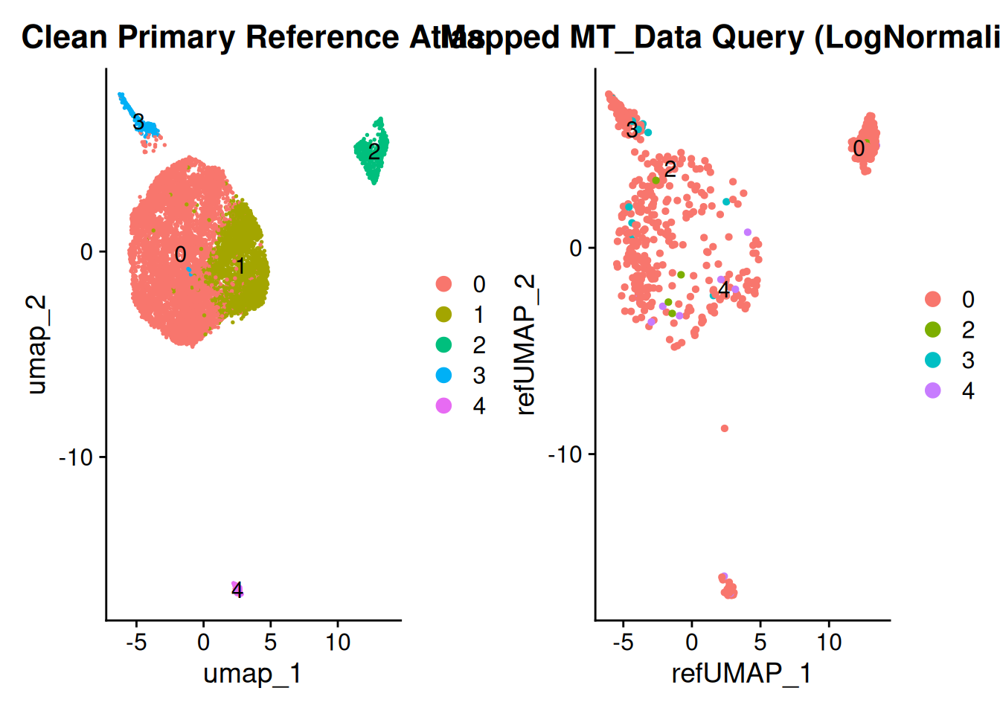
sessionInfo()R version 4.5.2 (2025-10-31)
Platform: x86_64-pc-linux-gnu
Running under: Ubuntu 24.04.3 LTS
Matrix products: default
BLAS: /usr/lib/x86_64-linux-gnu/openblas-pthread/libblas.so.3
LAPACK: /usr/lib/x86_64-linux-gnu/openblas-pthread/libopenblasp-r0.3.26.so; LAPACK version 3.12.0
locale:
[1] LC_CTYPE=en_US.UTF-8 LC_NUMERIC=C
[3] LC_TIME=en_US.UTF-8 LC_COLLATE=en_US.UTF-8
[5] LC_MONETARY=en_US.UTF-8 LC_MESSAGES=en_US.UTF-8
[7] LC_PAPER=en_US.UTF-8 LC_NAME=C
[9] LC_ADDRESS=C LC_TELEPHONE=C
[11] LC_MEASUREMENT=en_US.UTF-8 LC_IDENTIFICATION=C
time zone: Etc/UTC
tzcode source: system (glibc)
attached base packages:
[1] grid stats4 stats graphics grDevices utils datasets
[8] methods base
other attached packages:
[1] future_1.75.0 ggpubr_0.6.3
[3] circlize_0.4.17 lubridate_1.9.4
[5] stringr_1.5.2 purrr_1.2.2
[7] tidyr_1.3.1 tidyverse_2.0.0
[9] ComplexHeatmap_2.26.1 ggrain_0.1.2
[11] enrichplot_1.30.5 ggforce_0.5.0
[13] DT_0.34.0 UCell_2.14.0
[15] assertthat_0.2.1 SCpubr_3.0.1
[17] forcats_1.0.1 fgsea_1.36.2
[19] DOSE_4.4.0 GO.db_3.22.0
[21] org.Hs.eg.db_3.22.0 AnnotationDbi_1.72.0
[23] clusterProfiler_4.18.4 ggtangle_0.1.2
[25] ggarchery_0.4.4 EnhancedVolcano_1.28.2
[27] tibble_3.3.0 MAST_1.36.0
[29] speckle_1.10.0 harmony_1.2.4
[31] Rcpp_1.1.0 clustree_0.5.1
[33] ggraph_2.2.2 scDblFinder_1.24.10
[35] SingleCellExperiment_1.32.0 SummarizedExperiment_1.40.0
[37] Biobase_2.70.0 GenomicRanges_1.62.1
[39] Seqinfo_1.0.0 IRanges_2.44.0
[41] S4Vectors_0.48.0 BiocGenerics_0.56.0
[43] generics_0.1.4 MatrixGenerics_1.22.0
[45] matrixStats_1.5.0 ggrepel_0.9.6
[47] cowplot_1.2.0 patchwork_1.3.2
[49] scCustomize_3.2.4 hdf5r_1.3.12
[51] Seurat_5.4.0 SeuratObject_5.3.0
[53] sp_2.2-0 ggplot2_4.0.0
[55] dplyr_1.1.4 readr_2.1.5
[57] workflowr_1.7.2
loaded via a namespace (and not attached):
[1] R.methodsS3_1.8.2 ggpp_0.6.1
[3] goftest_1.2-3 Biostrings_2.78.0
[5] vctrs_0.7.3 spatstat.random_3.4-2
[7] digest_0.6.37 png_0.1-8
[9] shape_1.4.6.1 git2r_0.36.2
[11] deldir_2.0-4 parallelly_1.46.1
[13] fontLiberation_0.1.0 MASS_7.3-65
[15] reshape2_1.4.5 foreach_1.5.2
[17] httpuv_1.6.16 qvalue_2.42.0
[19] withr_3.0.2 ggrastr_1.0.2
[21] xfun_0.58 ggfun_0.2.0
[23] survival_3.8-3 memoise_2.0.1
[25] ggbeeswarm_0.7.3 gson_0.1.0
[27] janitor_2.2.1 systemfonts_1.3.1
[29] tidytree_0.4.7 zoo_1.8-14
[31] GlobalOptions_0.1.3 pbapply_1.7-4
[33] R.oo_1.27.1 Formula_1.2-5
[35] rematch2_2.1.2 KEGGREST_1.50.0
[37] promises_1.4.0 otel_0.2.0
[39] httr_1.4.7 rstatix_0.7.3
[41] restfulr_0.0.16 globals_0.19.1
[43] fitdistrplus_1.2-5 ps_1.9.1
[45] rstudioapi_0.17.1 UCSC.utils_1.6.1
[47] miniUI_0.1.2 processx_3.8.6
[49] curl_7.0.0 ScaledMatrix_1.19.0
[51] polyclip_1.10-7 SparseArray_1.10.8
[53] doParallel_1.0.17 xtable_1.8-4
[55] evaluate_1.0.5 S4Arrays_1.10.1
[57] hms_1.1.4 irlba_2.3.5.1
[59] colorspace_2.1-2 polynom_1.4-1
[61] ROCR_1.0-12 reticulate_1.44.1
[63] spatstat.data_3.1-9 magrittr_2.0.4
[65] lmtest_0.9-40 snakecase_0.11.1
[67] glmGamPoi_1.22.0 ggtree_4.0.4
[69] later_1.4.4 viridis_0.6.5
[71] lattice_0.22-7 spatstat.geom_3.6-0
[73] future.apply_1.20.1 getPass_0.2-4
[75] scattermore_1.2 XML_3.99-0.19
[77] scuttle_1.21.0 RcppAnnoy_0.0.23
[79] pillar_1.11.1 nlme_3.1-168
[81] iterators_1.0.14 compiler_4.5.2
[83] beachmat_2.26.0 RSpectra_0.16-2
[85] stringi_1.8.7 tensor_1.5.1
[87] GenomicAlignments_1.46.0 plyr_1.8.9
[89] crayon_1.5.3 abind_1.4-8
[91] BiocIO_1.20.0 scater_1.38.0
[93] gridGraphics_0.5-1 locfit_1.5-9.12
[95] graphlayouts_1.2.2 bit_4.6.0
[97] fastmatch_1.1-8 whisker_0.4.1
[99] codetools_0.2-20 BiocSingular_1.27.1
[101] bslib_0.9.0 paletteer_1.7.0
[103] GetoptLong_1.1.0 plotly_4.11.0
[105] mime_0.13 splines_4.5.2
[107] fastDummies_1.7.5 sparseMatrixStats_1.22.0
[109] tidydr_0.0.6 utf8_1.2.6
[111] knitr_1.50 blob_1.2.4
[113] clue_0.3-67 fs_2.1.0
[115] checkmate_2.3.3 listenv_0.10.0
[117] DelayedMatrixStats_1.32.0 ggsignif_0.6.4
[119] ggplotify_0.1.3 Matrix_1.7-4
[121] callr_3.7.6 statmod_1.5.1
[123] tzdb_0.5.0 tweenr_2.0.3
[125] pkgconfig_2.0.3 tools_4.5.2
[127] cachem_1.1.0 RhpcBLASctl_0.23-42
[129] cigarillo_1.0.0 RSQLite_2.4.3
[131] viridisLite_0.4.2 DBI_1.2.3
[133] fastmap_1.2.0 rmarkdown_2.30
[135] scales_1.4.0 ica_1.0-3
[137] Rsamtools_2.26.0 broom_1.0.10
[139] sass_0.4.10 ggprism_1.0.7
[141] dotCall64_1.2 carData_3.0-6
[143] RANN_2.6.2 farver_2.1.2
[145] scatterpie_0.2.6 tidygraph_1.3.1
[147] yaml_2.3.10 rtracklayer_1.70.1
[149] cli_3.6.5 lifecycle_1.0.5
[151] uwot_0.2.4 presto_1.0.0
[153] backports_1.5.0 bluster_1.20.0
[155] BiocParallel_1.44.0 timechange_0.3.0
[157] gtable_0.3.6 rjson_0.2.23
[159] ggridges_0.5.7 progressr_0.18.0
[161] ape_5.8-1 parallel_4.5.2
[163] limma_3.67.0 jsonlite_2.0.0
[165] edgeR_4.9.2 RcppHNSW_0.6.0
[167] bitops_1.0-9 bit64_4.6.0-1
[169] xgboost_3.2.0.1 Rtsne_0.17
[171] yulab.utils_0.2.3 spatstat.utils_3.2-0
[173] BiocNeighbors_2.4.0 jquerylib_0.1.4
[175] metapod_1.19.1 GOSemSim_2.36.0
[177] dqrng_0.4.1 spatstat.univar_3.1-4
[179] R.utils_2.13.0 lazyeval_0.2.2
[181] shiny_1.11.1 htmltools_0.5.8.1
[183] sctransform_0.4.3 rappdirs_0.3.3
[185] glue_1.8.0 spam_2.11-3
[187] XVector_0.50.0 gdtools_0.4.4
[189] RCurl_1.98-1.17 treeio_1.34.0
[191] rprojroot_2.1.1 scran_1.38.0
[193] gridExtra_2.3 igraph_2.2.1
[195] R6_2.6.1 ggiraph_0.9.3
[197] labeling_0.4.3 cluster_2.1.8.1
[199] aplot_0.2.9 GenomeInfoDb_1.46.2
[201] mcprogress_0.1.1 DelayedArray_0.36.0
[203] tidyselect_1.2.1 vipor_0.4.7
[205] car_3.1-5 fontBitstreamVera_0.1.1
[207] rsvd_1.0.5 KernSmooth_2.23-26
[209] S7_0.2.0 fontquiver_0.2.1
[211] data.table_1.17.8 htmlwidgets_1.6.4
[213] RColorBrewer_1.1-3 rlang_1.3.0
[215] spatstat.sparse_3.1-0 spatstat.explore_3.5-3
[217] ggnewscale_0.5.2 beeswarm_0.4.0